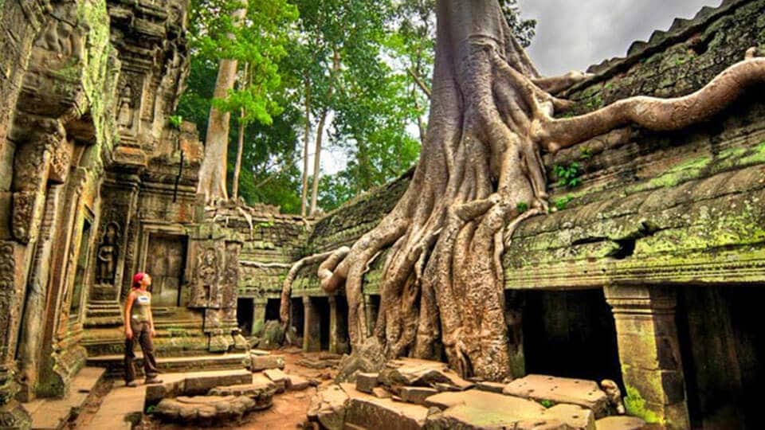

España


Italia
Grecia
Cuba

Posiblemente la Playa de Varadero se encuentra entre las playas de Cuba más conocidas, ubicada a 120 kilómetros al este de La Habana, en la península de Hicacos [ver en mapa], en la provincia de Matanzas. Con 20 kilómetros de hermosa arena blanca en una de las mejores playas que alberga la isla, Varadero es una atracción turística en si misma.
Maldivas

Maldivas es un país tropical en el océano Índico que abarca 26 atolones con forma de anillos que se componen de más de 1,000 islas de coral. Es conocido por las playas, las lagunas azules y los extensos arrecifes. La capital, Malé, tiene un mercado de pescado ajetreado, restaurantes y tiendas en la avenida principal, Majeedhee Magu, y la mezquita del siglo XVII Hukuru Miskiy (también conocida como la Mezquita del Viernes), hecha de coral blanco tallado
Filipinas

Filipinas es un país del sur de Asia en el Pacífico Occidental, que abarca más de siete mil islas. Su capital, Manila, es famosa por su paseo costero y Binondo, el barrio chino de siglos de antigüedad. Intramuros, una ciudad amurallada en la época colonial, es el núcleo de Manila Antigua. Cuenta con la iglesia barroca de San Agustín, del siglo XVII, y el fuerte Santiago, una ilustre ciudadela y prisión militar.
Camboya
Camboya es un país del Sudeste Asiático cuyo paisaje abarca llanuras bajas, el delta del Mekong, montañas y la costa del golfo de Tailandia. Nom Pen, su capital, alberga el Mercado Central de estilo art decó, el reluciente palacio real y las exhibiciones arqueológicas e históricas del Museo Nacional. En el noroeste del país, se encuentran las ruinas de Angkor Wat, un enorme complejo de templos de piedra construido durante el Imperio Jemer.
Asturias
Se trata de una aproximación a una zona que no te dejará indiferente, por lo que estamos seguros de que repetirás en el futuro para saborearla sin prisas y conocer aquellos rincones que te han quedado pendientes. El recorrido transcurre a lo largo de la costa, de punta a punta –de Cantabria a Galicia-, entre playas, acantilados, pequeños pueblos pesqueros, calas... Y es que la Costa Verde -como es conocido el litoral asturiano -Castropol a Ribadedeva- puede presumir de un paisaje espectacular.
Alcala del Jucar
Alcalá del Júcar se encuentra situado en el noroeste de la provincia de Albacete, englobado dentro de la comarca de La Manchuela. Fue declarado conjunto Histórico-Artístico en 1982. En 1986 le fue concedido el tercer premio, después de la Torre Eiffel y la Gran Mezquita de Estambul, a la mejor iluminación artística.
El Castell de Guadalest
El Castell de Guadalest es un municipio pequeño situado en el interior de la provincia de Alicante. El mayor atractivo es su ubicación. Cuando alguien lo visita, por primera vez, se queda impresionado al ver sobre una roca las ruinas del castillo y el campanario.
Cudillero
Sus miradores, sus casas multicolores, su puerto y sus especialidades culinarias como el pixuetín o el curadillo hacen que esta preciosa villa marinera sea el destino perfecto para una escapada.
Las cinque terre
Cinque Terre es una franja de ciudades costeras de siglos de antigüedad en la escabrosa costa de la Riviera italiana. En cada una de las cinco ciudades, las casas coloridas y los viñedos se aferran a empinadas terrazas, los puertos están llenos de botes pesqueros y las trattorias ofrecen especialidades de mariscos junto con la famosa salsa de la región de Liguria, el pesto. El sendero de excursión Sentiero Azzurro, en el acantilado, conecta las ciudades y ofrece vistas panorámicas del mar.
Verona
Verona es una ciudad de la región Véneto, en el norte de Italia. Es una ciudad preciosa que es mundialmente famosa por la historia de Romeo y Julieta escrita por el gran dramaturgo inglés William Shakespeare; por eso, se conoce como la ciudad más romántica de Italia. Verona es la segunda ciudad artística por importancia de la región, después de Venecia. Fue un centro muy importante bajo los Etruscos, después bajo los Romanos, durante la Edad Media con el gobierno de la familia Scaligeri, y parte de la República de Venecia.
Napoles

Nápoles es color, es Vesuvio, es mar, es gente alegre, es caos, es tráfico, es ruido, es folklore, es música, es pizza mmm la pizza de Nápoles! “Vedi Napoli e muori” (Ve Napoles y muere) se suele decir… todavía no tengo muy claro si es porque es tan bonita que ya no te hace falta ver más o si es porque el riesgo de que te atropelle una moto con 3 personas sin casco es muy alto. Pero una cosa es verdad: Nápoles no te dejará indiferente. Si tienes la suerte de poder visitar la ciudad más colorida de Italia te contamos las cosas que tienes que ver y hacer en Nápoles.
Turin
Hay muchas cosas que hacer en Turín, una ciudad preciosa con un gran centro histórico al pie de los Alpes y rodeada por los ríos Po y Dora, con sus calles y plazas porticadas, sus restaurantes y históricos cafés, merece una visita de 2 o 3 días. También podemos afirmar que es la gran olvidada de Italia y es que en cualquier otro país.
Mykonos

Santoini y Mykonos, dos islas con encanto donde poder disfrutar de unas vacaciones de ensueño y, donde una de las islas ofrece más calma Santorini y la otra puede ser un destino para aquellas personas que les guste la fiesta, Mykonos, ya que la llaman la ibiza italiana. Lo cierto es que para viajar a estos destinos se deben coger con tiempo ya que así sale mucho más económico el viaje.
Atenas

Atenas es la capital de Grecia. También se encontraba en el centro de la Antigua Grecia, un poderoso imperio y civilización. En la ciudad, aún predominan los sitios geográficos del siglo V a. C., incluida la Acrópolis, una ciudadela sobre un monte con antiguos edificios, como el templo del Partenón con sus columnas. En el Museo de la Acrópolis y en el Museo Arqueológico Nacional, se preservan esculturas, jarrones, joyas y más elementos de la Antigua Grecia.
Naxos
Naxos es la isla más extensa de las Cícladas, un archipiélago griego situado en el mar Egeo. Su fértil paisaje abarca aldeas de montaña, ruinas ancestrales e interminables playas. La capital homónima (también llamada "Hora" o "Chora") es un municipio portuario de casas encaladas y mansiones medievales de la época veneciana. El kastro o castillo, del siglo XIII, alberga un museo arqueológico.
Rodas
Rodas, la isla más grande del Dodecaneso en Grecia, es famosa por sus centros turísticos en la playa, las ruinas antiguas y los restos de su ocupación por parte de la Orden de San Juan durante las Cruzadas. La ciudad de Rodas tiene una Ciudad Antigua con la Calle de los Caballeros medieval y el palacio del Gran Maestre, similar a un castillo. El palacio fue capturado por los otomanos y, luego, lo ocuparon los italianos; actualmente, es un museo de historia.